require(igraph)
g <- make_graph( c(1,2, 1,3, 2,3, 2,4, 3,5, 4,5), n=5, dir=FALSE )
plot(g, vertex.color="skyblue2")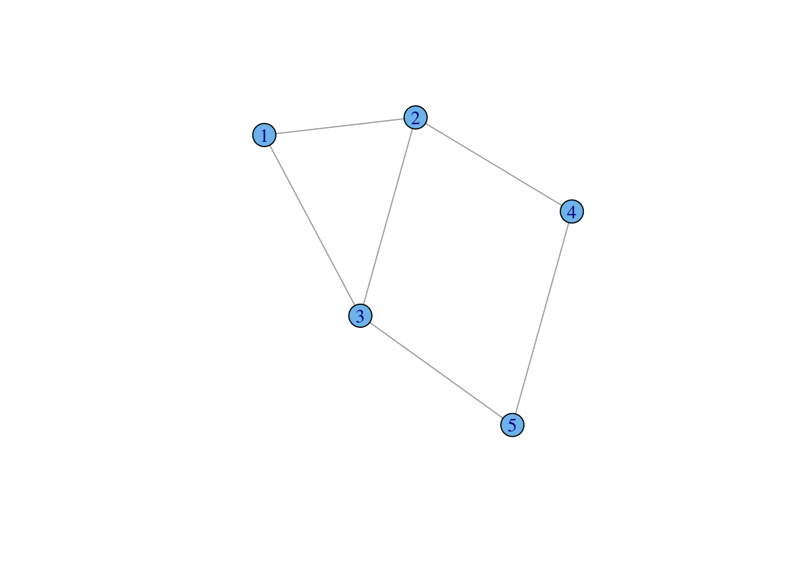
In this chapter, I will focus on drawing graphs using the R package igraph. I have a more thorough introduction to graphs elsewhere
A graph is simply a collection of vertices (or nodes) and edges (or ties). We can denote this \(\mathcal{G}(V,E)\), where \(V\) is a the vertex set and \(E\) is the edge set. The vertices of the graph represent the actors in the social system. These are usually individual people, but they could be households, geographical localities, institutions, or other social entities. The edges of the graph represent the relations between these entities (e.g., “is friends with” or “has sexual intercourse with” or “sends money to”). These edges can be directed (e.g., “sends money to”) or undirected (e.g., “within 2 meters of”).
When the relations that define the graph are directional, we have a directed graph or digraph.
Graphs (and digraphs) can be binary (i.e., presence/absence of a relationship) or valued (e.g., “groomed five times in the observation period”, “sent $100”).
A graph (with no self-loops) with \(n\) vertices has \({n \choose 2} = n(n-1)/2\) possible unordered pairs. This number (which can get very big!) is important for defining the density of a graph, i.e., the fraction of all possible relations that actually exist in a network.
A bipartite graph is a graph where all the nodes of a graph can be partitioned into two sets \(\mathcal{V}_1\) and \(\mathcal{V}_2\) such that for all edges in the graph connects and unordered pair where one vertex comes from \(\mathcal{V}_1\) and the other from \(\mathcal{V}_2\). Often called an “affiliation graph” as bipartite graphs are used to represent people’s affiliations to organizations or events.
igraphThe R package igraph provides tools for the analysis and visualization of networks. The package is actually just a set of R bindings for functions written in C++ that can be used in a variety of environments (e.g., native, R, Python).
We can create a small, undirected graph of five vertices from a vector of vertex pairs using the function make_graph():
require(igraph)
g <- make_graph( c(1,2, 1,3, 2,3, 2,4, 3,5, 4,5), n=5, dir=FALSE )
plot(g, vertex.color="skyblue2")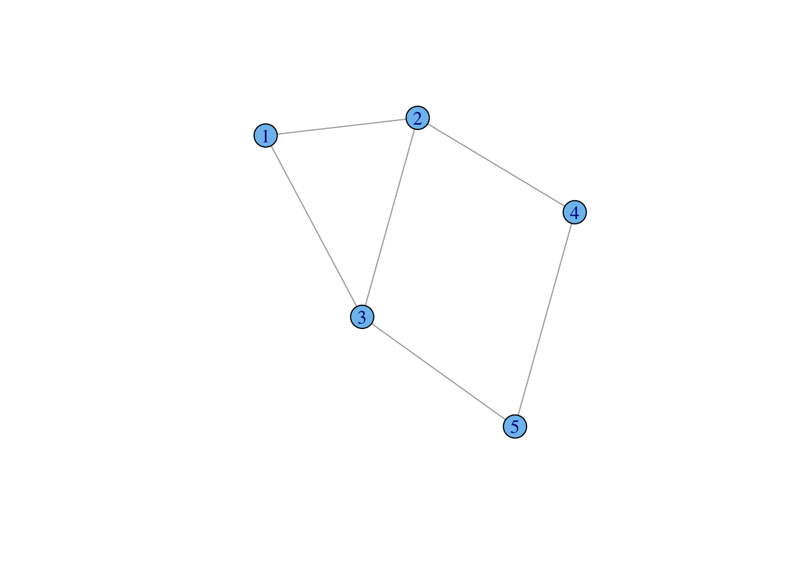
The call to the function make_graph() (which can be shortened to graph()) takes three arguments in this case. First, we enumerate the edges by listing the pairs of vertices which are connected. In this graph, there are six edges. Second, we define the size of our graph. This simple graph has five vertices, so n=5. Third, the default graph type is directed, so to create an undirected graph, we need to specify dir=FALSE. The function graph() creates a graph object which, like any R object, is associated with a number of methods. When we plot a graph object, the plotting method used is plot.igraph(). There are a number of features (or perhaps peculiarities) of the defaults of plot.igraph(). First, is the vertex color. It’s not hideous but it’s not an obvious choice for a default color either. Second, the default font label style is Roman, which can make the labels look cluttered. I typically change to a sens-serif font using the argument vertex.label.family="Helvetica". Third, the layout will not necessarily make sense to you as a human viewer of the graph and will typically change each time you call plot.igraph(). Fortunately, igraph has a number of excellent tools for assisting with graph layout.
For small graphs representing the relationships between a few named individuals, we can create a graph using graph_from_literal(). Undirected edges are indicated with one or more dashes -, --, etc. It doesn’t matter how many dashes you use – you can use as many as you want to make your code more readable. The colon operator : links “vertex sets” – i.e., creates ties between all members of two groups of vertices. So, for the Scooby Gang, we could specify the following graph
g <- graph_from_literal(Fred-Daphne:Velma-Shaggy, Fred-Shaggy-Scooby)
plot(g, vertex.shape="none", vertex.label.color="black")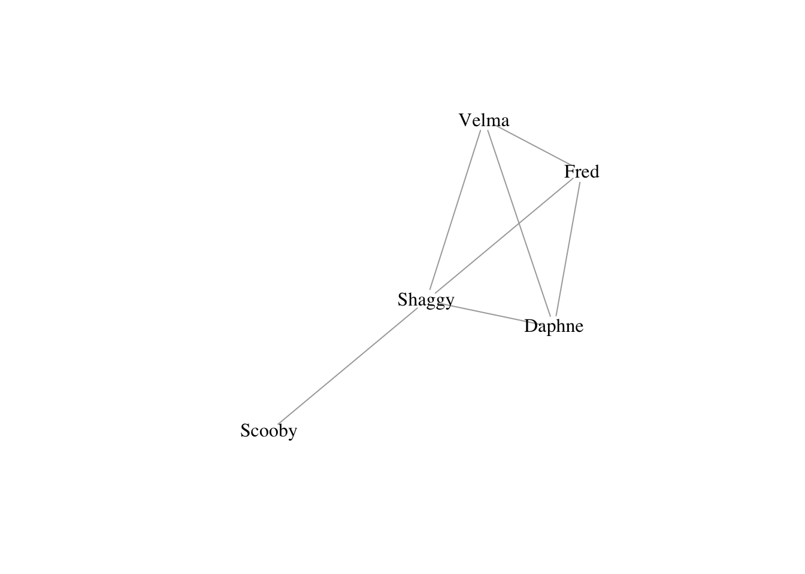
For directed edges, use -+ where the plus indicates the direction of the arrow, i.e., A --+ B creates a directed edge from A to B. A mutual edge can be created using +-+.
You will notice that many of the graphs in these notes are a bit cramped. This happens because when I render the Quartz document, R generates fairly small .png files. If you have, for example, vertex labels that really need to be read, it is a good idea to send your plot to a file that uses a vector-based format and potentially make it big. My preference is .pdf, but an argument can be made that .svg is even better. To do this, you just need to wrap your plotting commands in call to .pdf: pdf(file="filename.pdf", height14, width=14) and then don’t forget to close this off (i.e., after all your plotting commands) with dev.off() or you’ll keep sending graphics to your pdf file! The default size for pdf is \(7 \times 7\) (in inches). By specifying the optional arguments height and width, we’ve doubled the size of the plot. This will spread things out quite a bit and you may actually have to increase the size of your vertices, labels, etc.
A wide variety of special graphs are built into igraph. Note: I really don’t like the current default color in igraph (a kind of sickly orange), so I set the vertex color for every plot – you don’t have to do that
# empty graph
g0 <- make_empty_graph(20)
plot(g0, vertex.color="skyblue2", vertex.size=10, vertex.label=NA)# full graph
g1 <- make_full_graph(20)
plot(g1, vertex.color="skyblue2", vertex.size=10, vertex.label=NA)# ring
g2 <- make_ring(20)
plot(g2, vertex.color="skyblue2", vertex.size=10, vertex.label=NA)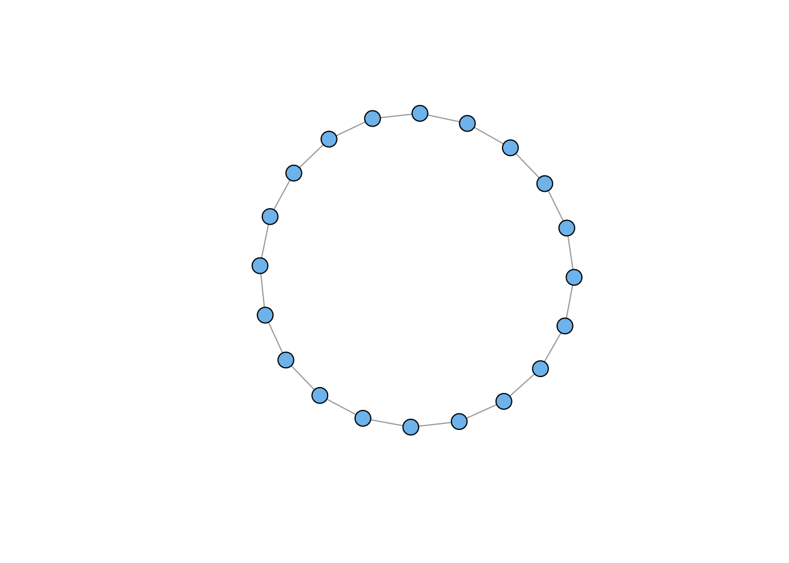
# lattice
g3 <- make_lattice(dimvector=c(10,10))
plot(g3, vertex.color="skyblue2", vertex.size=10, vertex.label=NA)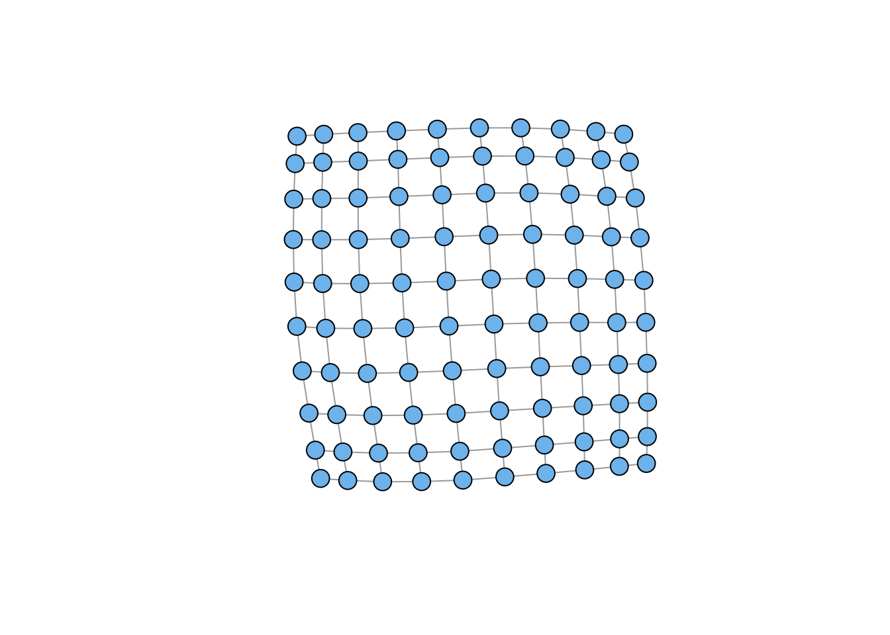
# tree
g4 <- make_tree(20, children = 3, mode = "undirected")
plot(g4, vertex.color="skyblue2", vertex.size=10, vertex.label=NA)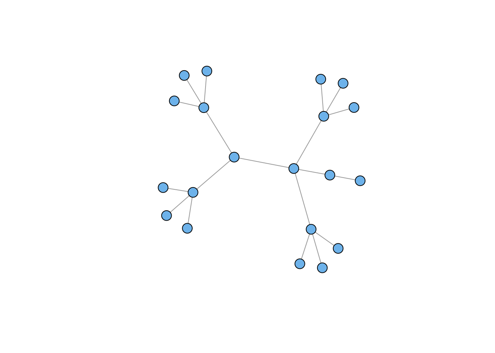
# star
g5 <- make_star(20, mode="undirected")
plot(g5, vertex.color="skyblue2", vertex.size=10, vertex.label=NA)# Erdos-Renyi Random Graph
g6 <- sample_gnm(n=100,m=50)
plot(g6, vertex.color="skyblue2", vertex.size=5, vertex.label=NA)# Power Law
g7 <- sample_pa(n=100, power=1.5, m=1, directed=FALSE)
plot(g7, vertex.color="skyblue2", vertex.size=5, vertex.label=NA)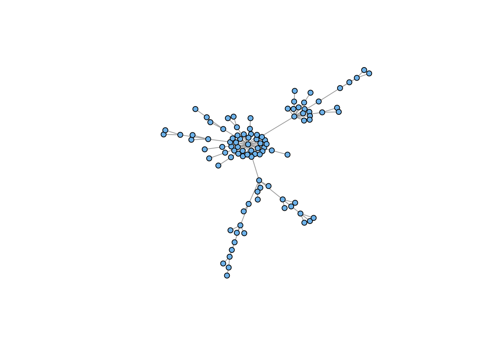
Sometimes you want to plot two (or more) graphs together. The disjoint union operator allows you to merge two graphs with different vertex sets:
plot(g4 %du% g7, vertex.color="skyblue2", vertex.size=5, vertex.label=NA)We often want to shuffle the edges of our graph around. A common application of this functionality is when we want to randomize the edges of a graph while maintaining the same vertex set and overall number of edges.
When you rewire a graph, there is a chance you will create isolates (i.e., vertices with no incident edges). For visualization purposes, you often want to remove these. You frequently will want to extract the largest connected subcomponent of your graph.
A subgraph is a graph \(\mathcal{G}^{\prime}\) where all the vertices and edges are also in graph \(\mathcal{G}\). Subgraphs can be generated by selecting either vertices or the edges from \(\mathcal{G}\). A component is a maximally connected subgraph of a graph (i.e., a path exists between all vertices in the subgraph). The igraph function subcomponent() will find all the subcomponents of your graph and order them in terms of their size. The largest subcomponent will be first, so you will often want to subset your graph (g) using the criterion subcomponent(g,1).
gg <- g4 %du% g7
gg <- rewire(gg, each_edge(prob = 0.3))
plot(gg, vertex.color="skyblue2", vertex.size=5, vertex.label=NA)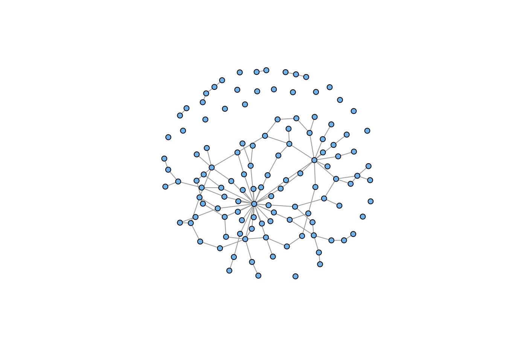
## retain only the connected component
gg <- induced_subgraph(gg, subcomponent(gg,1))
plot(gg, vertex.color="skyblue2", vertex.size=5, vertex.label=NA)You can add arbitrary attributes to both vertices and edges. Generally, you do this to store information for plotting: colors, edge weights, names, etc. Some attributes are automatically created when you construct an graph object (e.g., “name” or “weight” if you load a weighted adjacency matrix)
V(g) accesses vertex attributes
E(g) accesses edge attributes
## look at the structure
g4IGRAPH 62f2bc2 U--- 20 19 -- Tree
+ attr: name (g/c), children (g/n), mode (g/c)
+ edges from 62f2bc2:
[1] 1-- 2 1-- 3 1-- 4 2-- 5 2-- 6 2-- 7 3-- 8 3-- 9 3--10 4--11 4--12 4--13
[13] 5--14 5--15 5--16 6--17 6--18 6--19 7--20V(g4)$name <- LETTERS[1:20]
## see how it's changed
g4IGRAPH 62f2bc2 UN-- 20 19 -- Tree
+ attr: name (g/c), children (g/n), mode (g/c), name (v/c)
+ edges from 62f2bc2 (vertex names):
[1] A--B A--C A--D B--E B--F B--G C--H C--I C--J D--K D--L D--M E--N E--O E--P
[16] F--Q F--R F--S G--T## see what I did there?
## hexadecimal color codes
V(g4)$vertex.color <- "#4503fc"
E(g4)$edge.color <- "#abed8e"
g4IGRAPH 62f2bc2 UN-- 20 19 -- Tree
+ attr: name (g/c), children (g/n), mode (g/c), name (v/c),
| vertex.color (v/c), edge.color (e/c)
+ edges from 62f2bc2 (vertex names):
[1] A--B A--C A--D B--E B--F B--G C--H C--I C--J D--K D--L D--M E--N E--O E--P
[16] F--Q F--R F--S G--Tplot(g4, vertex.size=15, vertex.label=NA, vertex.color=V(g4)$vertex.color,
vertex.frame.color=V(g4)$vertex.color,
edge.color=E(g4)$edge.color, edge.width=3)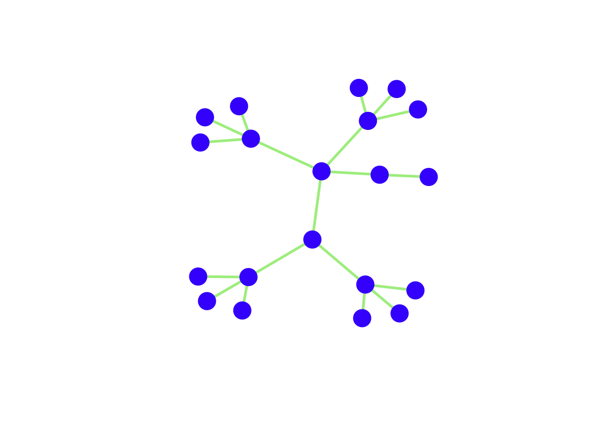
We can represent the relationships of a social network using a matrix. A matrix is simply a rectangular array of numbers with (n) rows and \(k\) columns. It is conventional to denote matrices mathematically using capital letters and boldface, such as \(\mathbf{A}\). We indicate the \(ij\)th element (i.e., the element corresponding to row \(i\) and column \(j\)) of \(\mathbf{A}\) as \(a_{ij}\). A sociomatrix or adjacency matrix is a square matrix (i.e., \(n \times n\), where \(n\) is the number of vertices in the network). It is typically binary, with \(a_{ij}=1\) if individuals \(i\) and \(j\) share an edge and \(a_{ij}=0\) otherwise. Consider a triangle:
# generate a triangle
g <- graph( c(1,2, 2,3, 1,3), n=3, dir=FALSE)Warning: `graph()` was deprecated in igraph 2.1.0.
ℹ Please use `make_graph()` instead.### coordinatess to make the triangle look nice
tri.coords <- matrix( c(228,416, 436,0, 20,0), nr=3, nc=2, byrow=TRUE)
par(mfrow=c(1,2))
plot(g, vertex.color="skyblue2",vertex.label.family="Helvetica")
plot(g, layout=tri.coords, vertex.color="skyblue2",vertex.label.family="Helvetica")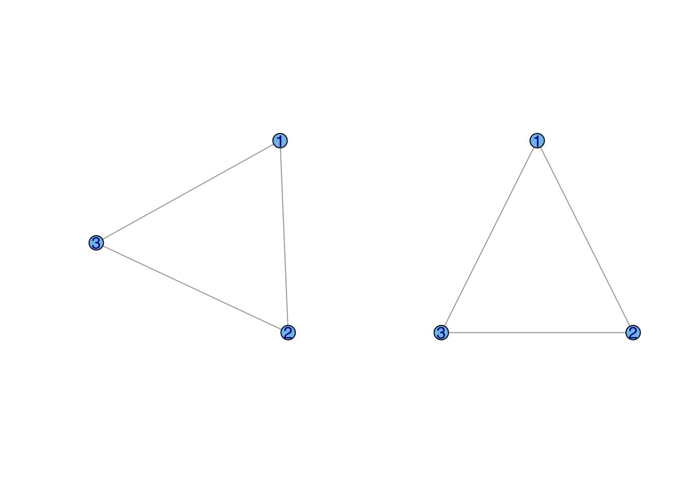
The sociomatrix corresponding to our triangle is
\[\begin{equation} \mathbf{A} = \left[ \begin{array}{cccc} 0 & 1 & 1 \\ 1 & 0 & 1 \\ 1 & 1 & 0 \end{array} \right]. \end{equation}\]By convention, the diagonal elements of a sociomatrix are all zero (i.e., self-loops are not allowed). Sociomatrix \(\mathbf{A}\) in the equation above is symmetric (\(a_{ij} = a_{ji}\)) because the graph is undirected. For a digraph, the upper triangle (i.e., matrix elements above the diagonal) of the sociomatrix will generally be different than the lower triangle.
Most primatologists/behavioral ecologists probably have experience thinking in terms of adjacency matrices. An example of an adjacency matrix is the pairwise interaction matrices (e.g., agonistic or affiliative interactions) that we construct from behavioral observations.
A very important potential gotcha: when you read data into R, it will be in the form of a data frame. Converting an adjacency matrix to an igraph graph object requires the data to be in the matrix class. Therefore, you need to coerce the data you read in by wrapping your read.table() in an as.matrix() command.
kids <- as.matrix(
read.table("data/strayer_strayer1976-fig2.txt",
header=FALSE)
)
kid.names <- c("Ro","Ss","Br","If","Td","Sd","Pe","Ir","Cs","Ka",
"Ch","Ty","Gl","Sa", "Me","Ju","Sh")
colnames(kids) <- kid.names
rownames(kids) <- kid.names
g <- graph_from_adjacency_matrix(kids, mode="directed", weighted=TRUE)
lay <- layout_with_fr(g)
plot(g, layout=lay, edge.arrow.size=0.5,
vertex.color="skyblue2", vertex.label.family="Helvetica",
vertex.frame.color="skyblue2")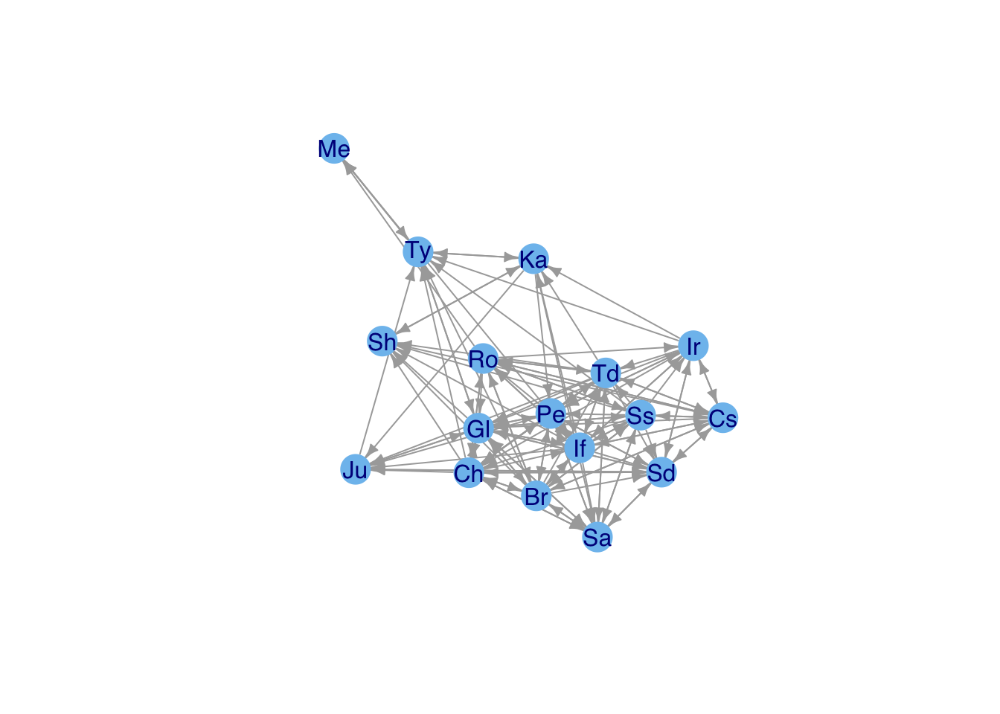
Note that you might want to change some of the graphics parameters depending on the type of display you use. For this document, the figures are constrained to be small, so you don’t want edges – and particularly arrows – to be too thick.
Adjacency matrices are actually very inefficient. The cost of an adjacency matrix increases as \(k^2\). However, most sociomatrices are quite sparse, meaning that most entries in a sociomatrix are zero. We can capitalize on this by using a sparse-matrix representation. In social network analysis, this representation is called an edge list and it is much more efficient than storing relational data in matrix format.
An edgelist is simply a two-column matrix in which each row represents a (possibly directed) edge between the vertex listed in first column and the second column.
Various algorithms for detecting clusters of similar vertices – i.e., “communities.” Use fastgreedy.community() to identify clusters in Kapferer’s tailor shop and color the vertices based on their membership.
A <- as.matrix(
read.table(file="data/kapferer-tailorshop1.txt",
header=TRUE, row.names=1)
)
G <- graph.adjacency(A, mode="undirected", diag=FALSE)Warning: `graph.adjacency()` was deprecated in igraph 2.0.0.
ℹ Please use `graph_from_adjacency_matrix()` instead.fg <- fastgreedy.community(G)Warning: `fastgreedy.community()` was deprecated in igraph 2.0.0.
ℹ Please use `cluster_fast_greedy()` instead.cols <- c("blue","red","black","magenta")
plot(G, vertex.shape="none",
vertex.label.cex=0.75, edge.color=grey(0.85),
edge.width=1, vertex.label.color=cols[fg$membership],
vertex.label.family="Helvetica")# another approach to visualizing
plot(fg,G,vertex.label=NA)fastgreedy.community() identified four clusters. These clusters are listed as numbers in fg$membership. We can then use this vector to index vertex colors.
The two most common layouts are Fruchterman-Reingold and Kawai-Kamada.
Sometimes you don’t want a force-based layout. You may have noticed that the lattice we plotted when we introduced make_lattice() was a bit funky. This is because for a force-based layout, vertices on the periphery will have very different forces working on them than those in the center.
plot(g3, vertex.color="skyblue2",
layout=layout_on_grid(g3,10,10), vertex.size=10, vertex.label=NA)The layout is of any given plot is random (e.g., plot the same graph repeatedly and you’ll see that the layout changes with each plot). igraph provides a tool for tinkering with the layout called tkplot(). Call tkplot() and it will open an X11 window (on Macs at least). Select and drag the vertices into the layout you want, then use tkplot.getcoords(gid) to get the coordinates (where gid is the graph id returned when calling tkplot() on your graph).
g <- graph( c(1,2, 2,3, 1,3), n=3, dir=FALSE)
plot(g,
vertex.color="skyblue2",
vertex.frame.color="skyblue2", vertex.label.family="Helvetica")#tkplot(g)
#tkplot.getcoords(1)
### do some stuff with tkplot() and get coords which we call tri.coords
## tkplot(g)
## tkplot.getcoords(1) ## the plot id may be different depending on how many times you've called tkplot()
## [,1] [,2]
##[1,] 228 416
##[2,] 436 0
##[3,] 20 0
tri.coords <- matrix( c(228,416, 436,0, 20,0), nr=3, nc=2, byrow=TRUE)
par(mfrow=c(1,2))
plot(g, vertex.color="skyblue2",
vertex.frame.color="skyblue2",
vertex.label.family="Helvetica")
plot(g, layout=tri.coords,
vertex.color="skyblue2",
vertex.frame.color="skyblue2", vertex.label.family="Helvetica")davismat <- as.matrix(
read.table(file="data/davismat.txt",
row.names=1, header=TRUE)
)
southern <- graph_from_incidence_matrix(davismat) Warning: `graph_from_incidence_matrix()` was deprecated in igraph 1.6.0.
ℹ Please use `graph_from_biadjacency_matrix()` instead.V(southern)$shape <- c(rep("circle",18), rep("square",14))
V(southern)$color <- c(rep("blue",18), rep("red", 14))
plot(southern, layout=layout.bipartite)## not so beautiful
## did some tinkering using tkplot()...
x <- c(rep(23,18), rep(433,14))
y <- c(44.32432, 0.00000, 132.97297, 77.56757, 22.16216, 110.81081, 155.13514,
199.45946, 177.29730, 243.78378, 332.43243, 410.00000, 387.83784, 354.59459,
310.27027, 221.62162, 265.94595, 288.10811, 0.00000, 22.16216, 44.32432,
66.48649, 88.64865, 132.97297, 166.21622, 199.45946, 277.02703, 365.67568,
310.27027, 343.51351, 387.83784, 410.00000)
southern.layout <- cbind(x,y)
plot(southern, layout=southern.layout, vertex.label.family="Helvetica")The incidence matrix is \(n \times k\), where \(n\) is the number of actors and \(k\) is the number of events
Project the incidence matrix \(X\) into social space, creating a sociomatrix \(A\), \(\mathbf{A} = \mathbf{X}\, \mathbf{X}^T\)
This transforms the \(n \times k\) into an \(n \times n\) sociomatrix
#Sociomatrix
(f2f <- davismat %*% t(davismat)) EVELYN LAURA THERESA BRENDA CHARLOTTE FRANCES ELEANOR PEARL RUTH
EVELYN 8 6 7 6 3 4 3 3 3
LAURA 6 7 6 6 3 4 4 2 3
THERESA 7 6 8 6 4 4 4 3 4
BRENDA 6 6 6 7 4 4 4 2 3
CHARLOTTE 3 3 4 4 4 2 2 0 2
FRANCES 4 4 4 4 2 4 3 2 2
ELEANOR 3 4 4 4 2 3 4 2 3
PEARL 3 2 3 2 0 2 2 3 2
RUTH 3 3 4 3 2 2 3 2 4
VERNE 2 2 3 2 1 1 2 2 3
MYRNA 2 1 2 1 0 1 1 2 2
KATHERINE 2 1 2 1 0 1 1 2 2
SYLVIA 2 2 3 2 1 1 2 2 3
NORA 2 2 3 2 1 1 2 2 2
HELEN 1 2 2 2 1 1 2 1 2
DOROTHY 2 1 2 1 0 1 1 2 2
OLIVIA 1 0 1 0 0 0 0 1 1
FLORA 1 0 1 0 0 0 0 1 1
VERNE MYRNA KATHERINE SYLVIA NORA HELEN DOROTHY OLIVIA FLORA
EVELYN 2 2 2 2 2 1 2 1 1
LAURA 2 1 1 2 2 2 1 0 0
THERESA 3 2 2 3 3 2 2 1 1
BRENDA 2 1 1 2 2 2 1 0 0
CHARLOTTE 1 0 0 1 1 1 0 0 0
FRANCES 1 1 1 1 1 1 1 0 0
ELEANOR 2 1 1 2 2 2 1 0 0
PEARL 2 2 2 2 2 1 2 1 1
RUTH 3 2 2 3 2 2 2 1 1
VERNE 4 3 3 4 3 3 2 1 1
MYRNA 3 4 4 4 3 3 2 1 1
KATHERINE 3 4 6 6 5 3 2 1 1
SYLVIA 4 4 6 7 6 4 2 1 1
NORA 3 3 5 6 8 4 1 2 2
HELEN 3 3 3 4 4 5 1 1 1
DOROTHY 2 2 2 2 1 1 2 1 1
OLIVIA 1 1 1 1 2 1 1 2 2
FLORA 1 1 1 1 2 1 1 2 2gf2f <- graph_from_adjacency_matrix(f2f, mode="undirected", diag=FALSE, add.rownames=TRUE)
gf2f <- simplify(gf2f)
plot(gf2f, vertex.color="skyblue2",vertex.label.family="Helvetica")
## who is the most central?
cb <- betweenness(gf2f)
#plot(gf2f,vertex.size=cb*10, vertex.color="skyblue2")
plot(gf2f,vertex.label.cex=1+cb/2, vertex.shape="none",vertex.label.family="Helvetica")### this gives you the number of women at each event (diagonal) or mutually at 2 events
(e2e <- t(davismat) %*% davismat) E1 E2 E3 E4 E5 E6 E7 E8 E9 E10 E11 E12 E13 E14
E1 3 2 3 2 3 3 2 3 1 0 0 0 0 0
E2 2 3 3 2 3 3 2 3 2 0 0 0 0 0
E3 3 3 6 4 6 5 4 5 2 0 0 0 0 0
E4 2 2 4 4 4 3 3 3 2 0 0 0 0 0
E5 3 3 6 4 8 6 6 7 3 0 0 0 0 0
E6 3 3 5 3 6 8 5 7 4 1 1 1 1 1
E7 2 2 4 3 6 5 10 8 5 3 2 4 2 2
E8 3 3 5 3 7 7 8 14 9 4 1 5 2 2
E9 1 2 2 2 3 4 5 9 12 4 3 5 3 3
E10 0 0 0 0 0 1 3 4 4 5 2 5 3 3
E11 0 0 0 0 0 1 2 1 3 2 4 2 1 1
E12 0 0 0 0 0 1 4 5 5 5 2 6 3 3
E13 0 0 0 0 0 1 2 2 3 3 1 3 3 3
E14 0 0 0 0 0 1 2 2 3 3 1 3 3 3ge2e <- graph_from_adjacency_matrix(e2e, mode="undirected", diag=FALSE, add.rownames=TRUE)
ge2e <- simplify(ge2e)
plot(ge2e, vertex.size=20, vertex.color="skyblue2",vertex.label.family="Helvetica")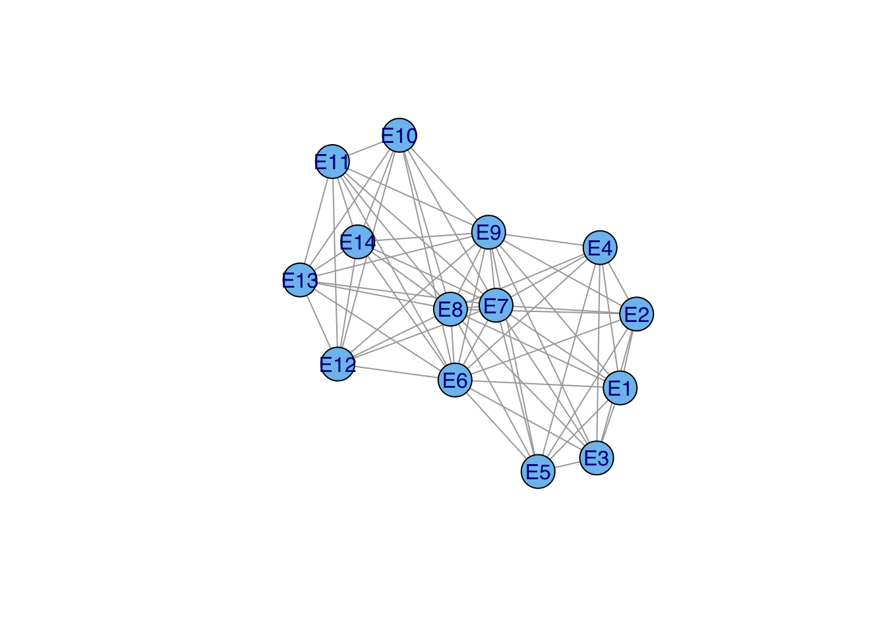